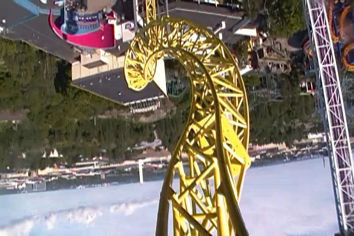
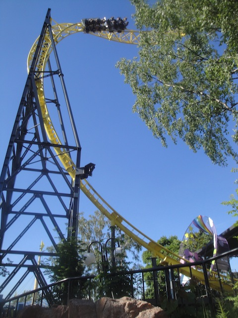
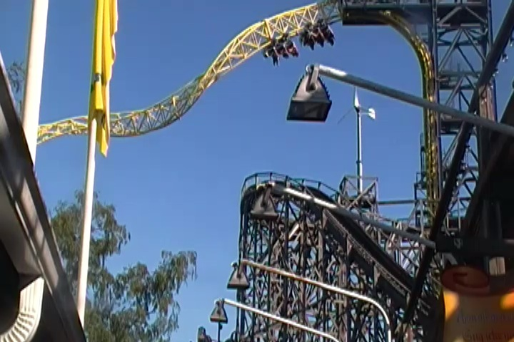
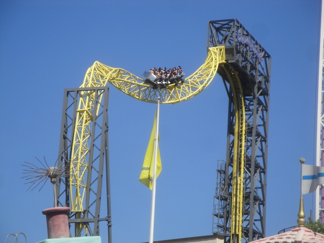
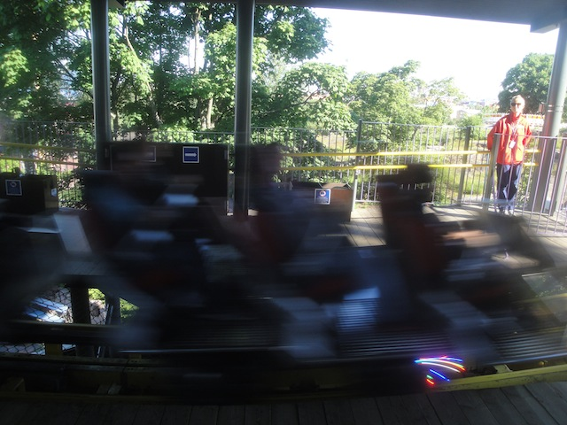
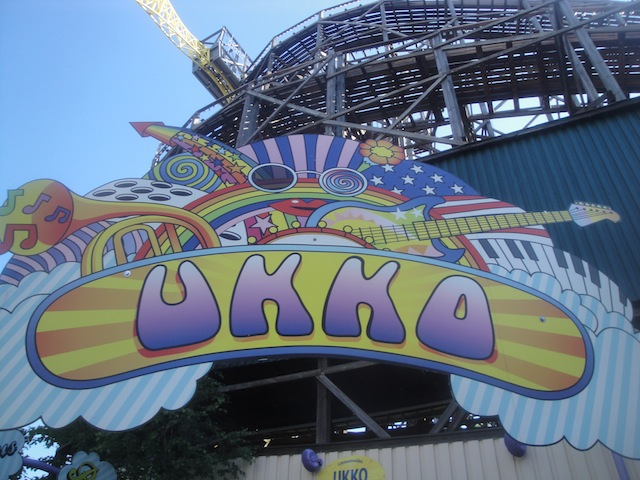

| |
Ukko Review

We're here at Linnanmäki. Today's ride we'll be reviewing for you is Ukko. Yep. This is another one of those really weird and funky Sky Loops that keep popping up in China for some reason, but there are a couple outside the country, like Ukko, in Finland. This is...one intersting ride. I know I've compared it to similar rides like Full Throttle and those Premier Sky Rockets. But that's not fair as those rides are much better and have much more. The Sky Loops are fun, but they're almost flat ride. They sort of fall into that gray area of fuzziness, where some enthusiasts will debate on whether they count, like the Intamin Halfpipes. Look, I'm really strict on counting credits. But these are credits. No doubt about that. And while I may have been badmouthing them for the start of this review, I actually really like these rides. They actually are a lot of fun. So let's get in the cars, pull down the giant lap bar, and away we go! We start climbing up the lifthill, which is completely vertical. So you're just climbing straight up into the sky. But you notice something. This thing is going to lead us upsidedown. And yep. We climb up, and instead of cresting it right side up, we just keep flipping until we're completely upsidedown as we crest the lifthill. So yeah. There's a lot of hangtime here. We then notice another roll, all while looking at Linnanmäki upsidedown. Honestly, the view is one of the coolest on any coaster. And that upsidedown twist is just so photogenic. So yeah. We flip back rightside up, flip upsidedown again, but you don't spend much time upsidedown, as you just dive right down towards the ground, gaining a lot of speed, and it's just a ton of fun. We fly through this one cool tunnel, blast through the station, and soar back up the vertical inversion lifthill, but we don't quite make it upsidedown, and fall backwards through the station, and back up the inversion, Hey! This is like a shuttle coaster. We fly back down, head up the vertical lift hill again, but this time, we're caught, and lowered back down to the station. I know some people will criticize this ride, and call it just a glorified Super Loop. And while there's a grain of truth to that, something about Ukko is just much more fun. Maybe it's the giant drop. Maybe it's the shuttle section. But something about this ride is just a lot of fun. If you get a chance to ride Ukko, or any of the other Sky Loops, give it a whirl.
7/10
Location: Linnanmäki
Opened: 2011
Built by: Maurer Söhne
Last Ridden: June 28, 2014
Ukko Photos





Home
|